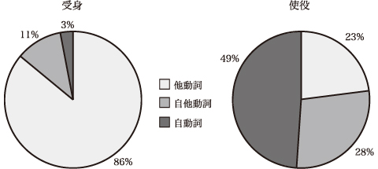

8 漢語動詞の他動詞・自動詞と受身形・使役形
日本語の動詞は「ドアが開く」「ドアを開ける」というように、自動詞と他動詞で形が違い、使い分けられている場合があります。漢語の「する動詞」（サ変動詞）は自動詞と他動詞に形の区別がありません。また、自他の区別のつきにくい語も多く、国語辞典で調べると、辞書によって自他が違う場合もあります。これは、中国語の動詞に活用がないことの影響であろうと思われますが、日本語になった「する動詞」は、他動詞は受身形にして自動詞のように用い、自動詞は使役形にして他動詞のように用いられることが多くあります。
例： 生産する（他動詞） 自動車を生産する → 自動車が生産される
普及する（自動詞） 新システムが普及する → 新システムを普及させる
朝日新聞の経済面（2001年12月～2002年1月）から、漢語の「する動詞」（サ変動詞）の受身形を200例、使役形を100例抽出して調べたところ、受身形における他動詞の割合は86％、自他ともにある動詞は11％、自動詞は3％、使役形における他動詞は23％、自他ともにある動詞は28％、自動詞は49％でした。使役形の出現率は受身形の4分の1程度でした。

経済面の記事では、ある商品を作った側からではなく商品の側から述べたものや、制度について述べたものなどには受身の文が出やすいですが、他に「ポイントを絞った需要喚起策の必要性が指摘されている」のように、客観性の出る非人物主語の受身もよく見られます。受身の文の内容については、単に受身なのか、客観的叙述のための文型選択なのか、区別がつけにくいものが多いです。使役にも「…生産拠点の海外移転が国内生産の減少を加速させ…」のような非人物主語の使役の文があり、これも文を客観的にさせる働きがあるようです。「する動詞」については、単に単語を覚えるだけでなく、その主語、修飾語に付く助詞と受身・使役形の選択等にも気をつけて文にして使えるように学習する必要があります。